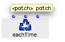
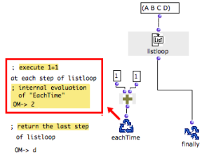
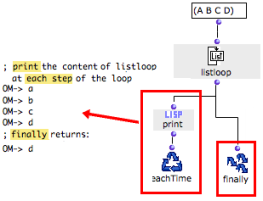
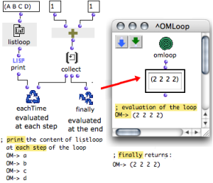

OpenMusic DocumentationHiérarchie de section : OM 6.6 User Manual > Visual Programming II > Iterations: OMLoop > Evaluators > EachTime
OpenMusic DocumentationHiérarchie de section : OM 6.6 User Manual > Visual Programming II > Iterations: OMLoop > Evaluators > EachTime
Navigation : page précédente | page suivante
Attention, votre navigateur ne supporte pas le javascript ou celui-ci à été désactivé. Certaines fonctionnalités de ce guide sont restreintes.
Executing Operations : EachTime
EachTime triggers successive evaluations inside the OMLoop. It is not visible from the outside.
EachTime can apply to any type of operation, but the results won't be returned to other boxes or displayed, unless the user adds relevant connections.
Inputs

|
EachTime has one default input, and can be added a number of optional inputs. Each input calls upstream boxes, so that several tasks can be performed at each step of the iteration. |
Uses
Producing, Displaying and Returning Results
Even if an EachTime evaluator is used, the result of Finally alone is displayed by the Listener. Yet, EachTime plays a very important part in an iteration, since it is the only means to evaluate and keep track of the results yielded at each step of the program. This is one of the main specificities and interests of OMLoop. The results of the operations called by EachTime can actually be displayed and returned to other boxes, inside and outside the OMLoop module . For instance, these results can be collected and returned to Finally with accumulators, or displayed by the Listener with a print box. |

EachTime has evaluated each step of the loop.
|
Example 1 : Checking an Iteration Process
To check what happens during the iteraion, a print box is evaluated at each step.
|

|
Example 2 : Collecting the Results of EachTime

|
The results of each loop of the iteration can be gathered in a list and returned to other boxes outside the module with collect , an accumulator. Collect stores the results of each loop in a list.
Note : the editable-text-box displays the value of the OMLoop output. |
Loop Accumulators
Références :
Plan :
Navigation : page précédente | page suivante
A propos...(c) Ircam - Centre Pompidou